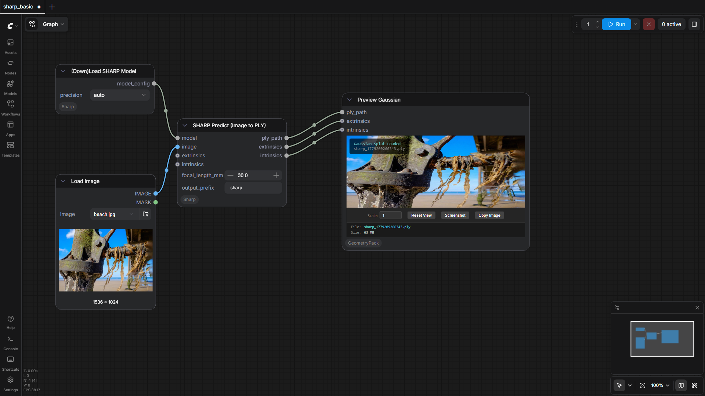
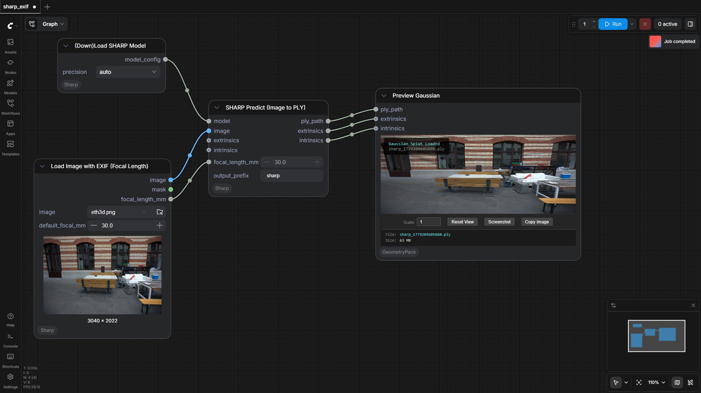

PozzettiAndrea/ComfyUI-Sharp
Test Results
2026-05-19 16:58 UTC
Test run
Windows-10-10.0.26100-SP0
AMD64 Family 25 Model 17 Stepping 1, AuthenticAMD
100.0%
2 passed
2/2 tests
Workflows
Grid
List

sharp_basic
pass
350.66s

sharp_exif
pass
335.04s
Downloaded Models
4 files · 2.6 GB
models/sharp/
2.6 GB
sharp_2572gikvuh.pt
2.6 GB
.cache\huggingface\CACHEDIR.TAG
195.0 B
.cache\huggingface\download\sharp_2572gikvuh.pt.metadata
128.0 B
.cache\huggingface\.gitignore
1.0 B
×
‹
›
0.0s / 0.0s
Resource Usage
RAM (GB)
VRAM (GB)